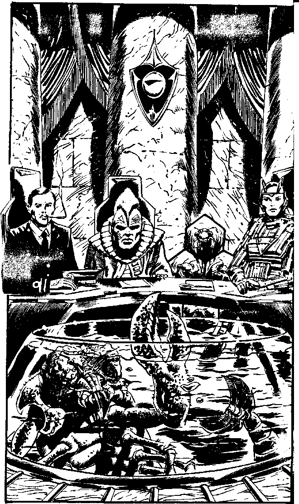

110
The silver doors hiss apart, affording you your first view of the Hall of Honours, which boasts a marble floor and colonnades. In the centre is a large oaken table, in the shape of a horseshoe, the only wood in the TIME building, around which sit the five Lords of TIME. Your Universal Translator synthesises an unusual waterygurgling into words of welcome that sound in your ear:
Welcome, Agent Falcon, never has a candidate graduated from the Academy with so high a score.' Your self-control allows you to smother any outward betrayal of surprise at the sight of the being which greets you. Submerged in a huge tank, along with some small aquatic mammals, is what looks like a giant lobster with bloated bluish brain-sacs floating under its spiked carapace. It waves a fearsome purplish pincer and clicks and gurgles: 'I am Time Lord Kirik of the Keladi.'
You bow respectfully and turn to look at the other Lords. You recognise Lord Speke, a dapper little Earther in a Navy 'dress uniform'. On his left sits a squat, humanoid figure, with blue •kin and a mane of bristling white hairs - Lord Silvermane of Rigel Prime. On the other side of the table sits Lord Pilota, a seven-foot tall Lastlander woman with the fragile build and sharp-boned features of all those who live on that low gravity world. She is supported in her chair by a hydraulic exoskeleton which gives her the appearance of a robot, but it is the fifth Lord of TIME sitting on her right who looks the strangest of them all. A network of silica, like an oversized honeycomb, rests on the floor. Inside each of the six cells of the honeycomb is what looks like a giant ant, swathed in silk, like a cocoon. Their front parts protrude from the silk, plainly showing dull-red, compound eyes and wicked looking mandibles which are in constant motion. Collectively, they are called The Creche 82282 and they are six parts of a communal mind, in constant mind-link with each other. They are Hivers, a separate part of the Hive.
The ceremony is brief; you swear an oath of allegiance to TIME and are duly commissioned as a Special Agent. Pilota rises and steps forward, uncomfortable in the relatively high gravity of earth, and pins your wings to your chest. Your Universal Translator renders a mixed babel of applause. The ceremony is drawing to a close and you still have little information on the Lords of TIME. You know that this will be your last chance to meet them together in the same room for some time, perhaps for ever.
| If you know why Section Chief Yelov did not contact you until the last minute about your mission | Turn to 153 |
If you do not, will you:
| Use your Psychic Awareness to contact one of them mentally? | Turn to 121 |
| Ask if any of them have travelled in time since the death of Agent Q? | Turn to 140 |
| Smile and make a short speech of thanks? | Turn to 167 |